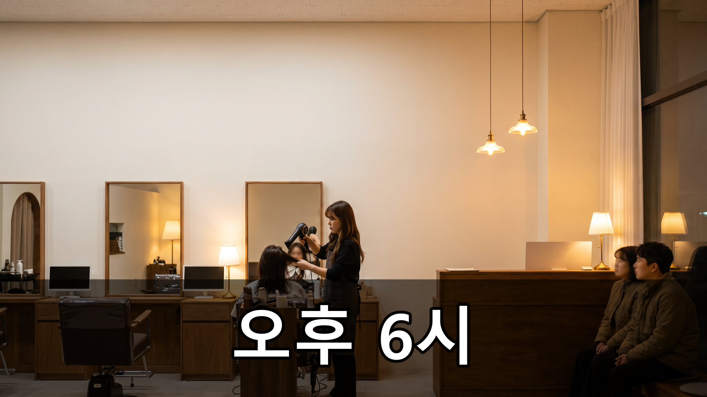
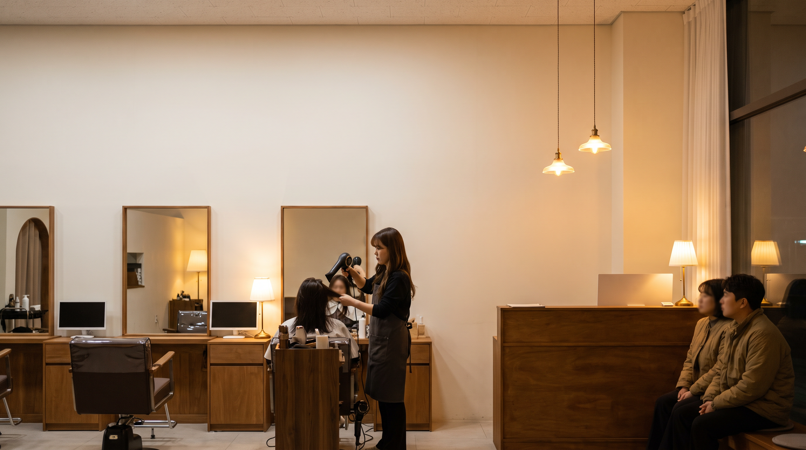
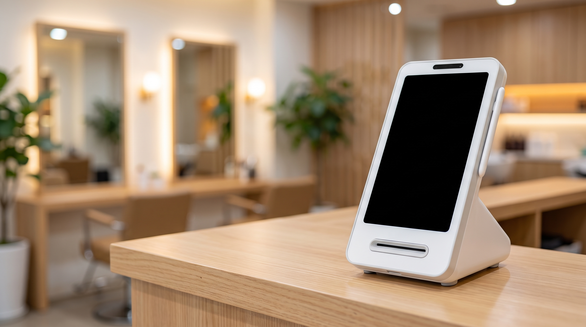

카드단말기대여, 미용실 카운터가 오후 6시에 막히는 이유 4가지 — 토스단말기 렌탈
오후 여섯 시, 드라이는 아직 안 끝났는데 계산할 손님은 이미 카운터 앞에 서 있습니다. 하루 중 이 시간만 유난히 정신없다는 말씀을 미용실 원장님들께 자주 듣습니다. 오늘은 그 시간에 무엇이 겹치는지 정리했습니다.

결론부터 말씀드리면, 미용실 카운터가 막히는 건 손님이 많아서가 아니라 시술이 끝나는 시각이 겹치기 때문입니다.
- 끝나는 시각을 겹치지 않게 그려 봅니다
예약을 잡을 때 시작 시각만 보면 종료가 한 지점에 몰립니다. 커트·펌·염색은 소요가 다르니 종료 시각 기준으로 한 번 그려 보시면 병목이 눈에 보입니다.
- 예약 간격을 조금씩 어긋나게 둡니다
정시에만 예약을 받으면 종료도 정시에 몰립니다. 15분만 엇갈리게 잡아도 카운터에 두 사람이 동시에 서는 일이 크게 줄어듭니다.
- 계산을 자리에서 끝낼 수 있게 만듭니다
드라이 마무리 중에 손이 비는 순간이 잠깐 있습니다. 그때 자리에서 결제까지 끝내면 손님이 카운터로 이동해 기다리는 시간이 사라집니다.
- 다음 예약을 계산과 같이 잡습니다
계산 따로, 예약 따로 하면 카운터에 머무는 시간이 두 배가 됩니다. 결제하는 그 자리에서 다음 방문을 함께 잡는 습관이 회전에 가장 크게 작용합니다.
- 대여로 들이신다면 계약서에서 볼 항목이 있습니다
계약 기간과 중도 해지 조건, 고장 시 방문 A/S 여부, 대체 기기 제공 여부를 확인해 두세요. 조건은 업체마다 다르므로 계약서 원문에서 직접 확인하시는 편이 정확합니다.
- 원장님 혼자 보는 시간대의 백업을 정해 둡니다
직원이 없는 시간에 기기가 멈추면 손쓸 방법이 없습니다. 예비 수단을 하나 정해 두는 것만으로 그날 하루가 달라집니다.

위 3번을 실행하는 방법 중 하나가 손에 들고 자리로 갈 수 있는 단말기입니다. 카운터가 좁은 미용실이라면 토스단말기처럼 작고 가벼운 쪽이 자리를 덜 차지합니다. 정품 신제품 보증 · 수도권 직영 설치를 원칙으로, 대여로 시작할지 여부는 매장 상황에 맞춰 상담해 드립니다.
여섯 시의 혼잡은 손님 수가 아니라 시각의 문제입니다. 예약표를 종료 시각으로 한 번만 다시 그려 보세요.
- 📞 전화상담 1544-7754
- 🌐 홈페이지 https://nwpos.co.kr

📷 인스타그램 팔로우 https://www.instagram.com/nurinetworkspos

▶️ 유튜브 구독 https://www.youtube.com/@nurinetworks
(2026년 8월 기준)